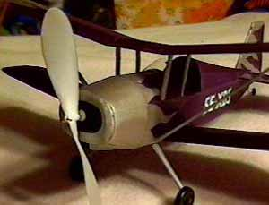

Model by Brooks
From: "Deep Thought"
Date: Sun, 10 Jan 1999
Finally got to go flying this weekend! It was absolutely gorgeous!! No
wind today. I took my mooney Piper PA-22 Colt and the Andreason out for
a spin. My best flight with the Colt was 65 seconds! (my best peanut
flight time ever). After I put a little left rudder and a 1/8" shim for
down thrust in the Andreason I was ready to go. I used 1 loop of 1/8"
rubber 14" long. It flies like it is on rails. Very stable no wobble and
no stalls. Just nice big circles up then nice circles down. By far my
best success with a bipe yet. No crash damage (one of the reasons I like
peanuts so well). My times, while not spectacular compares to other
times posted, were very satisfying to me. My 3 best times (outdoors)
were 21 seconds, 27 seconds and 31 seconds. Good luck to you all!
OOS
Brooks